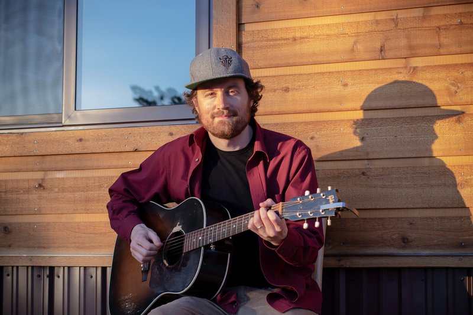

Inside you, there's a gift that's asking to be discovered, developed, and delivered to the world. Our alternative, person-centered Master of Arts is a twelve-month container to become who you are, built around your art and your inner wisdom practices. This fall, we explore Good Life Facilitation.
Or take the five-week workshop on its own. Backed by our "Show Your Work" satisfaction guarantee.
"This has been the most educational thing I've done outside of my education, and the most therapeutic thing I've done outside of therapy." Paul Marcus, Psychotherapist — Taos, NM
The Practice
How would you workshop practical wisdom? We believe in live dialogues, deep listening, and paying close attention to what we're paying attention to. We believe in generative questions, loving speech, and kind curiosity: a rhythm of community, spirit, and sharing.
Writing as meditation, as a place to take a leaf blower to your mind, connect with sources of creativity. Right-brain processing, creative innovation, and discovery.
Prototypes, Odyssey Plans, Dashboards, Compasses, and beautiful questions to frame your emergent wisdom. Good Life writing means shitty first drafts, tests, revisions, and edits.
Small groups make this work. Not therapy, but therapeutic hope, universality, cohesion, and interpersonal learning. Mindful facilitation for here-and-now attention, by leaders on a mission to gather people in the spirit of Joy.
The facilitator is also learning. Symmetry between dialogue partners, and meaning made together between whole persons. Buber's I–Thou in practice.
The Year
You enter through a seasonal doorway, and the year takes its shape from there: a self-directed set of daily practices, a weekly process letter to the teaching team, a monthly 1:1 conversation, and creative artifacts published throughout. Four movements across twelve months, designed to be as beautiful as possible.
Your co-creative contract is witnessed. Your entry workshop begins. The daily practice gets established.
A first prototype exists. You revise your contract.
Feedback cycles with fellows.
Your culmination is shared publicly, and the year closes with a commencement conversation.
Between the Sessions
Daily invitations and weekly challenges to live a good life. An optional Discord channel and WhatsApp thread, plus gatherings hosted by alumni and participants.
Each week the community reviews together: what moved, what stalled, what we need from each other.
Mondays: Mindful Writing, the improv wisdom group. Friday afternoons: feedback on projects.
Optional one-on-one sessions when a project gets stuck.
A weekly email or SMS of field notes, invitations, and connections between participants.
The Long Game
Five weeks, five books on culturing containers for community: Rogers, Heider, Taylor, Stelter, and Yalom. Three groups of eight: two on Zoom, one in Fort Collins.
Apply → Read the syllabus →Seven weeks on the psychology of creativity.
Join the waitlist →Seven weeks of mindful writing as a practice of presence.
Join the waitlist →Five uplifting weeks for groups and individuals who want to gain happiness skills to do good in the world.
Join the waitlist →The fall cycle returns.
Join the waitlist →Five sessions for up to 25 participants. Proven with the City of Fort Collins and the Greater Cincinnati Foundation. From $2,950.
Schedule a conversation →Voices From
"I can not believe how much I've changed in seven weeks. I started thinking I would fix my life and career… and it turned out that I got back into a relationship with myself."Monica Aikman, Nurse — Saskatchewan, Canada
"All this free-writing unlocked something in me. There's stuff in me that wants to come out!"Luna Alice, Medical Student — United Kingdom
"This course gave me what I didn't know I needed: permission to boldly make choices."Simi Llowyin, Community Organizer — Toronto, Canada
"One of the biggest challenges of quitting my job was feeling like I was doing it alone. Going through this with other people made a huge difference."Samantha Scott, Accountant — London, UK
"It was like improvisational philosophy! The art of playfully saying yes to the wisdom of others and enhancing that wisdom with our own."Brian Oney, Facilitator — San Francisco, CA
"It gave me the space to listen to the sound of my own voice."Subarna Ganguly, Student & Artist — New Delhi, India
About

Sean is a Master Instructor who teaches writing at Colorado State University, where he has been faculty for 17 years. He holds master's degrees in Philosophy and English Education, and has over 1,500 hours of small-group mindful facilitation experience.
He founded the Wisdom Workshop in 2021 to begin to re-imagine education: what would school look like for people in mid-life transitions? What if the traditional Master of Arts program were more part-time, personal, and emergent? He draws on world philosophies, group psychodynamics, and positive psychology, and on musical listening: he has played over 1,000 indie-folk shows in and near Colorado.
"Sean has a gift for warmth, genuineness, and unconditional positive regard."
Email · Schedule a call · Substack · Spotify
The next doorway opens November 10 and 11. Three groups, eight seats each.